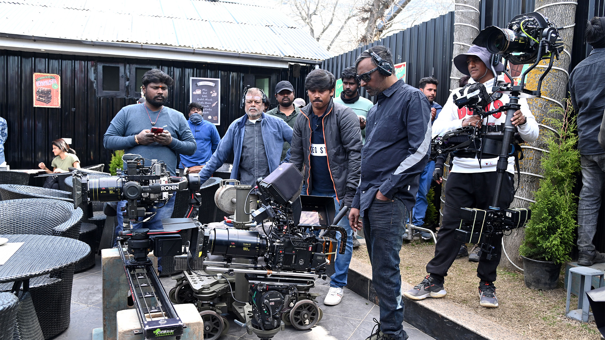
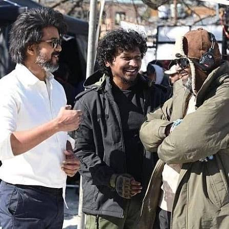

LEO MOVIE
ABOUT MOVIE
The 2023 Tamil-language film Leo is an action thriller directed by Lokesh Kanagaraj, starring Vijay as Parthiban, a humble café owner in Himachal Pradesh. His quiet life shatters when he kills a gang of intruders in self-defense, drawing the attention of dangerous drug lords who claim he is actually Leo Das, a former cartel enforcer.
The film was officially announced in January 2023 under the tentative title Thalapathy 67, as it is Vijay's 67th film as a lead actor, and the official title was announced a few days later. Principal photography commenced the same month in Chennai along with a sporadic schedule in Kashmir, which was again followed by another schedule held at the former location, and wrapped by mid-July. The film has music composed by Anirudh Ravichander, cinematography handled by Manoj Paramahamsa and editing by Philomin
Leo was released worldwide on 19 October 2023 in standard and IMAX formats to mixed reviews from critics, with praise for Vijay's performance, technical aspects and action sequences while the writing received criticism. It set several box office records for a Tamil film, emerging as the second highest-grossing Tamil film of 2023,[5][9][10][11] the seventh highest-grossing Indian film of 2023, third highest-grossing Tamil film of all time, the highest-grossing Tamil film overseas and the highest-grossing film in Tamil Nadu.
MOVIE SPOTS



Spot details
The 2023 blockbuster Leo starring Thalapathy Vijay was primarily filmed across stunning locations in Kashmir, Chennai, and Talakona. The iconic "Wild Bean Cafe" (Parthiban's bakery) was shot at [Sifar Cafe] (https://www.youtube.com/watch?v=2smqHBQ2vm8) (formerly Cherry Cafe) in the Anantnag district near Pahalgam, which has since become a major tourist attraction.
Help
To book tickets for Thalapathy Vijay's film Leo in Chennai, you can easily use online ticket platforms to view theater showtimes, select your preferred seats, and purchase tickets directly from your device.Top Booking PlatformsBookMyShow: You can access the specific event page directly via the BookMyShow Leo Page to check theater availability and secure your seats.Ticketnew: For another great local booking option, you can browse showtimes and venues on the Ticketnew Chennai Movies platform.
Contact
If you are trying to reach the film's production house or the team, direct business and casting inquiries for Tamil cinema are typically handled through official artist management agencies or production studios located in Chennai, such as Leo International (based in Mount Road, Chennai).For specific details regarding the film's cast, reviews, or to stream it online, utilize the following direct pathways:Streaming & Viewing: You can watch the full film with subtitles on the official Netflix page.Cast & Crew Details: To view the full credits and behind-the-scenes information, check the IMDb page.Production Inquiries: For artistic representation and production-related services in the local area, contact details for Leo International on Justdial can be used.